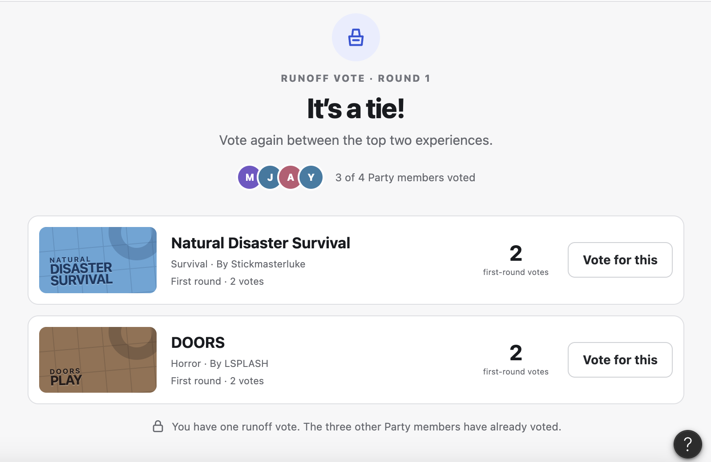

03 · Product Concept
Roblox —
Playlists
A collaborative playlist concept that helps friends save Roblox experiences, decide what to play, and move into an existing Party together.
Independent concept project. Not affiliated with Roblox.
- ROLE
- Product Designer
- FORMAT
- Independent concept
- FOCUS
- Collaboration + group decision-making
- PROTOTYPE
- Figma Make
More deciding together.


The idea came from a pretty simple problem.
When a group of friends wants to play Roblox together, choosing the game can become its own process before anyone even starts playing. Everyone has suggestions, people are searching separately, and the group still has to figure out what everyone is actually in the mood for.
Roblox Playlists grew out of that moment. Favorites already gives someone a place to save a game for themselves, but I wanted Playlists to have more intention behind them. A player could build a Horror Nights playlist when they are in the mood for scary games, a Fashion playlist around experiences like Dress to Impress, or a Friday Night playlist that a group of friends contributes to together.
The difference is less about bookmarking a game and more about organizing what you want to play, sharing that collection when it makes sense, and giving the group a way to decide what comes next.
The question I designed around was: how can friends collect game ideas and decide what to play without making the process feel like more work than the game itself?
How I wanted the playlist to work
A playlist also needed to be useful whether someone was playing alone or with friends. A user can start one privately, save experiences they want to come back to, and later turn it into a shared playlist if other people want to contribute.
Once the playlist is shared, friends can add their own suggestions, see who added each game, vote on what they want to play, and keep the list in an order that makes sense for the group. I also wanted sharing to be a choice instead of assuming every saved collection needed to become social.
Keeping collaboration from becoming extra work
A shared playlist only helps if it makes choosing a game easier. If everyone has to create a playlist, invite people, and vote every single time they play, the feature creates the exact friction it is supposed to remove.
Because of that, the collaborative pieces are optional. A playlist can stay personal, become shared later, and only use voting when a group actually needs help deciding.

The first-round vote stays visible, but only the tied experiences move into the runoff. Once the group picks a winner, the result becomes Next Up and still requires a final confirmation before Party launches the game.
From choosing a game to actually playing it
The prototype follows the full flow from seeing that friends are online, opening a shared playlist, managing who can contribute, deciding on a game, and then launching the experience with the existing Party.
On the home screen, I placed playlists next to the current Party so the feature feels connected to what the user is already trying to do. Their friends are online, and the playlist gives them a place to decide what they want to play together.

Inside a shared playlist, everyone can see the order, who added each experience, how many votes it has, what is up next, and the option to play without leaving the collection.

When creating a playlist, the user decides whether it starts private or shared. I wanted collaboration to feel optional instead of being forced into every playlist.
Once the group chooses a game, a simple confirmation closes the loop and shows that the experience will launch for the Party that already exists.
Building it in Figma Make
Figma Make let the project move beyond visual design into a working prototype. The main actions could actually be tested, including creating a playlist, adding and removing experiences, inviting collaborators, voting, changing the order, and moving into the Party launch.
The AI-assisted workflow helped me move through those interactions quickly, but the main work was still deciding how much structure the feature actually needed. I had to think about when collaboration should be optional, how voting should behave when the group disagrees, and where Playlists should stop so Party can take over.
COLLECT → VOTE → PLAY TOGETHER
Building a working version of the idea made it easier to see how collaboration, voting, and the Party flow worked together instead of only showing the final screens.
What I would work on next
The main thing I would want to learn next is whether a shared playlist actually makes choosing a game easier for a real group of friends.
If I continued the project, the next step would be testing how friends currently suggest games to each other, whether themed collections feel meaningfully different from Favorites, and when voting feels helpful versus too formal for a casual play session.
I would also want to see whether the runoff and final confirmation feel quick enough when a Party is already online and ready to play. The feature should make the decision easier without turning a casual moment into a process people have to manage.